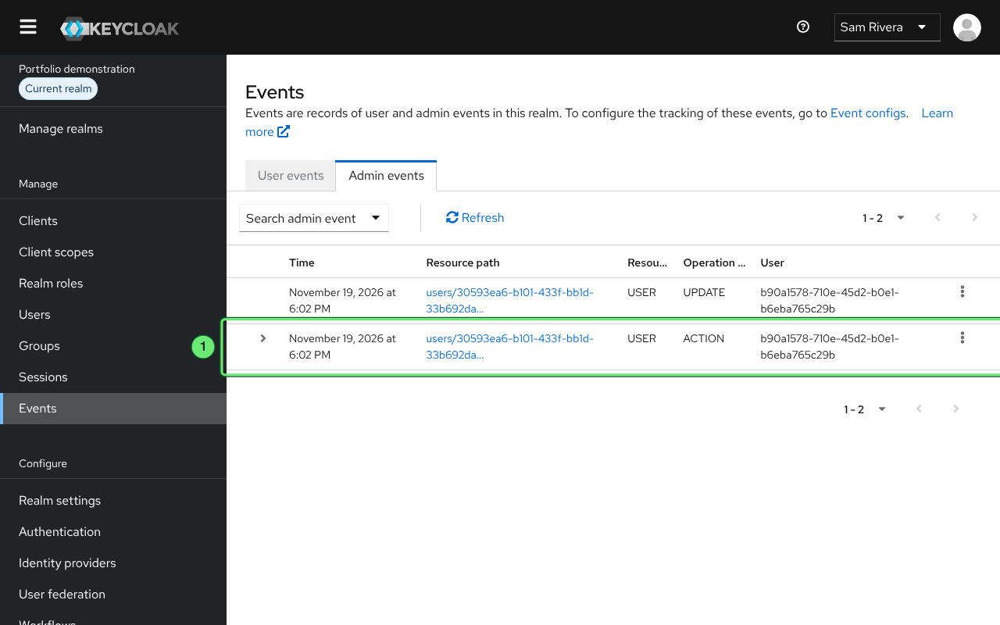

Reset a User’s OTP Credential in Keycloak
When a user loses or replaces the phone that holds their authenticator app, sign the user out, delete the phone’s one-time password (OTP) credential, and make the user set up a new one at their next sign-in. This resets the OTP credential only: it doesn’t remove passkeys, security keys or other second factors that the user may also have.
Before You Begin
- Confirm that the request comes from the user. Use a phone number or an address the user gave before they lost the phone, not one in the request.
- Sign in to the admin console with an account that can manage the realm’s users. The screenshots were taken as an administrator of the master realm.
- Make sure that the user has the new phone, with an authenticator app such as FreeOTP, Google Authenticator, or Microsoft Authenticator.
- Check that the realm uses Keycloak’s default browser flow, in which the OTP step is conditional. With a custom flow, Keycloak may ask for a code at a different point, or not at all.
About This Task
For Keycloak administrators. Written for Keycloak 26.8.2 and checked against it. Every screen here comes from a Keycloak 26.8.2 server running on my own computer, with a test realm and test users. This is an independent guide, not official Keycloak documentation.
Procedure
- In the admin console, check that the user’s realm is the current realm: its name is at the top of the menu. Select Users, search for the user, and then select their username.

- On the Details tab, in Required user actions, select Configure OTP, and then select Save.

- Select the Credentials tab, and find the Otp row of the lost phone: its User label names the device, such as Alex’s phone. If the user has more than one Otp row, delete only the row of the lost phone.

- In the Delete credentials? dialog, select Delete. Check that the Otp row of the lost phone no longer appears on the Credentials tab.

- Ask the user to sign in. After the password, Keycloak shows Mobile Authenticator Setup. The user scans the QR code with the authenticator app on the new phone, enters the code that the app shows, names the device, and then selects Submit.

Results
On the Sessions tab, no session is listed. On the Credentials tab, a new Otp row shows the name that the user gave the new device, with today’s date.

Keycloak also keeps a record. When the realm saves admin events, Events > Admin events lists the deletion as an ACTION on the user’s credential, and the new required action as an UPDATE of the user.

What to Do Next
- If Invalid authenticator code. appears during the setup, see When a Keycloak user can’t sign in with a one-time password.
- To see what the realm asks of an authenticator, such as the number of digits and how long a code lasts, see Keycloak OTP policy.